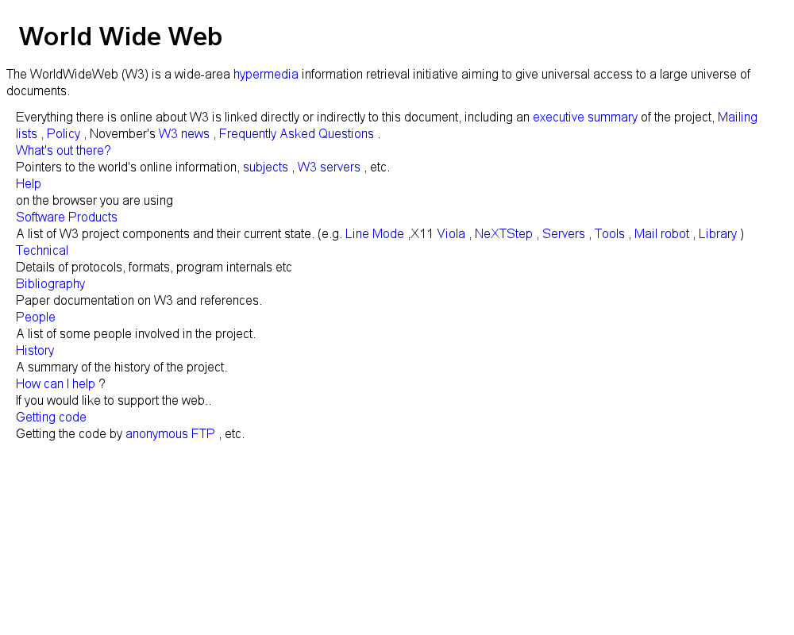
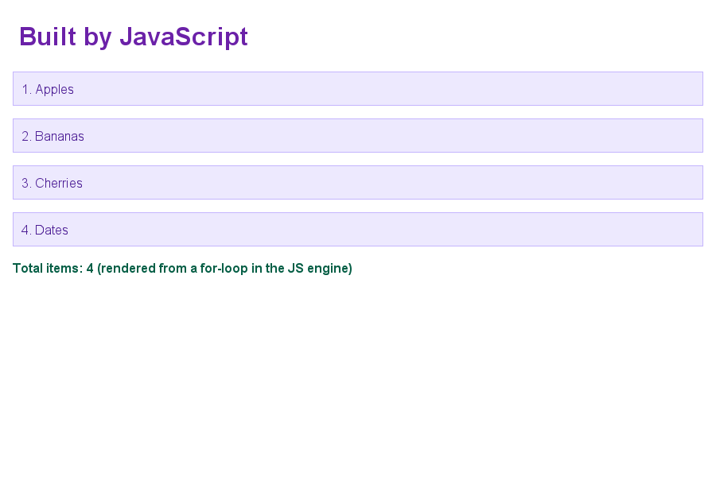
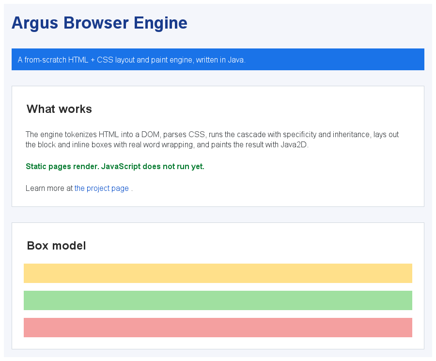

Inverted index & BM25
Analysis pipeline (tokenizer, lowercase, stopwords, Porter stemmer), postings with delta + varint compression, and Okapi BM25 / TF-IDF scoring over document-at-a-time scorers.
Written from scratch · Java 17 · Zero runtime dependencies
Argus is two hard systems in one codebase: a full-text search engine with an inverted index, BM25 ranking, a durable segment store, and concurrent near-real-time indexing; and a rendering engine that turns HTML, CSS, and JavaScript into pixels — tokenizer, DOM, cascade, layout, paint, and a tree-walking JS interpreter, all hand-written.
Analysis pipeline (tokenizer, lowercase, stopwords, Porter stemmer), postings with delta + varint compression, and Okapi BM25 / TF-IDF scoring over document-at-a-time scorers.
Segment files, a CRC-framed write-ahead log with torn-tail recovery, an atomic manifest, and near-real-time refresh backed by immutable snapshots for lock-free search.
A parser for field terms, boolean AND/OR/NOT, +/- clauses,
"phrases", prefix*, and grouping — compiled to a scorer tree.
A tolerant HTML tokenizer and tree builder, a CSS parser with selectors and specificity, and a cascade that resolves computed styles with inheritance and inline overrides.
A CSS box-model layout engine (block flow, the width/height/margin algorithm, and inline line-breaking with word wrap) painted to a display list and rasterized with Java2D.
A lexer, recursive-descent parser, and tree-walking interpreter with closures,
this, arrays, objects, and DOM bindings — scripts mutate the page before paint.
Every image below was produced by Argus — no browser component is embedded.

info.cern.ch) fetched over HTTP and rendered: headings, wrapped text, and inline links.
createElement in a loop), then styled and painted.
A document flows through six hand-written stages to become pixels.
One-click native installers — each bundles its own Java runtime, so there is nothing
else to install. Built by GitHub Actions with jpackage. The button in the hero
picks the right one for your system; grab any platform directly here.
Prefer to run it yourself? Grab the portable jar (any OS),
browse all releases, or clone the repo and run mvn verify.